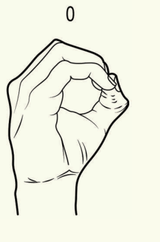
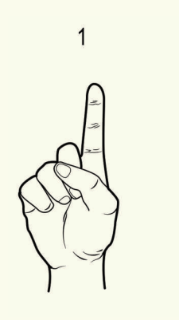
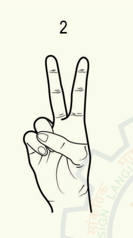
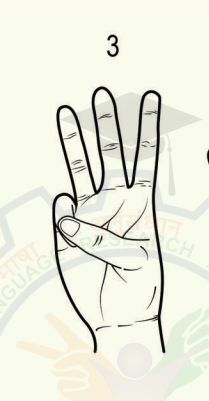
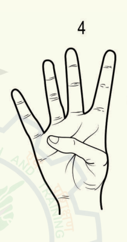
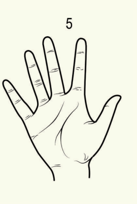
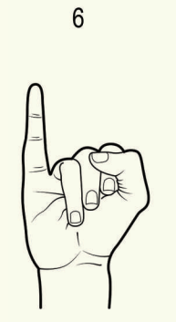
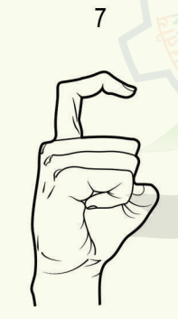
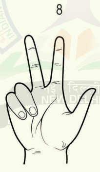
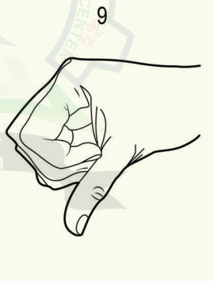

Here are the signs for each letter of the alphabet in Indian Sign Language (ISL). Click on the images to view the details and note for each letter.

Description: The sign for 0 is made by forming a circle with your thumb and index finger, with the remaining fingers extended.

Description: Hold up your index finger while the other fingers are curled into the palm, with your palm facing forward. .

Description: Hold up your index and middle fingers, while the other fingers are curled into the palm. The palm faces forward.

Description:Hold up your index, middle, and ring fingers, with the other fingers curled into the palm. The palm faces forward.

Description: Hold up your index, middle, ring, and pinky fingers, while the thumb secures the other fingers against the palm. The palm faces forward.

Description: Spread your fingers wide, keeping the palm facing forward.

Description: Start with a "5" handshape, and then curl your thumb inward to touch the base of the pinky finger. The palm faces outward.

Description: Hold up a "5" handshape, and then curl the index, middle, and ring fingers into the palm while keeping the pinky and thumb extended. The palm faces forward.

Description: Form a fist with your thumb tucked inside and the pinky finger extended outward. Palm faces forward.

Description: Start with a fist and then extend the pinky finger while keeping the thumb outside the fist. Palm faces forward.